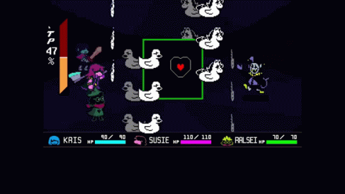
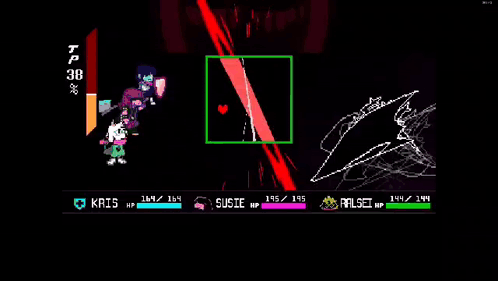
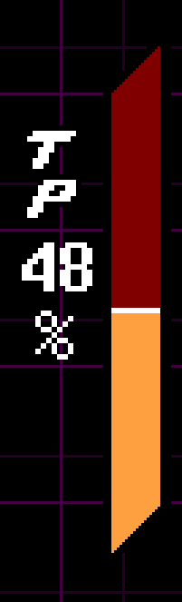

Combat
Sistem combat dalam Deltarune merupakan pengembangan dari Undertale, menggabungkan pertarungan turn-based klasik dengan bullet-hell yang menuntut refleks, strategi, dan pilihan moral pemain.

Sistem combat dalam Deltarune merupakan pengembangan dari Undertale, menggabungkan pertarungan turn-based klasik dengan bullet-hell yang menuntut refleks, strategi, dan pilihan moral pemain.
Opsi ini memungkinkan karakter menyerang musuh secara langsung. Damage ditentukan oleh timing dan statistik karakter. Tidak semua musuh harus dikalahkan dengan kekerasan.
ACT adalah inti dari filosofi Deltarune. Pemain dapat berbicara, menggoda, mengancam, atau melakukan aksi unik untuk mempengaruhi musuh secara non-kekerasan.
Bertahan mengurangi damage dan meningkatkan TP (Tension Points), sumber daya penting untuk sihir dan aksi spesial.
Musuh yang telah dipengaruhi dengan ACT dapat diampuni (Spare). Menyelesaikan pertarungan tanpa membunuh adalah pilihan yang sering dianjurkan.

Saat giliran musuh, pemain mengendalikan SOUL yang harus menghindari serangan berbentuk pola peluru. Warna SOUL dan arena dapat berubah sesuai mekanik pertarungan.
Dalam sistem pertarungan Deltarune, pemain mengendalikan SOUL (jiwa) saat giliran musuh menyerang. SOUL ini mewakili kendali pemain atas Kris, dan cara SOUL bergerak serta berinteraksi dengan serangan musuh membentuk inti dari gameplay bullet-hell. Setiap musuh atau situasi tertentu dapat mengubah warna SOUL, yang berarti aturan pertarungan juga ikut berubah.

TP dihasilkan dengan menyerang, bertahan, dan mendekati peluru musuh. TP digunakan untuk sihir seperti Rude Buster, Heal Prayer, dan kemampuan khusus karakter.